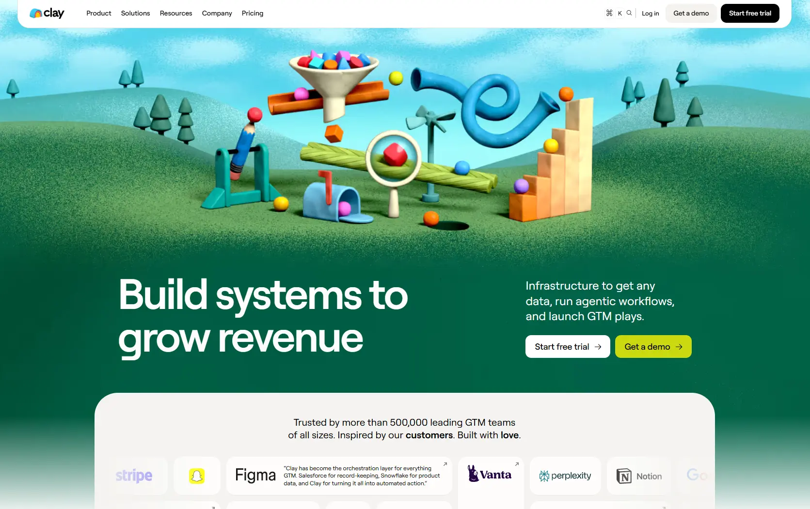

Clay
- Сервисы и приложения
- ИИ-сервисы
- Игривый
- Минимализм
- Сайт жив

Что это
Сайт американской платформы для сбора и обогащения данных о клиентах и работы с рынком. Визуальная особенность — псевдопластилиновые иллюстрации, которые на деле оказываются девятью зацикленными видео: тяжёлый ролик в первом экране и секционные клипы с ленивым запуском. Весёлый иллюстрированный сайт платформы для сбора данных о клиентах. Главная фишка — псевдопластилиновые анимированные иллюстрации.
Чем интересен
- Описание владельца про псевдопластилиновые иллюстрации требует поправки: это не Lottie, не Rive, не Three.js и не канвас, а девять зацикленных беззвучных видео — тяжёлый ролик в первом экране и секционные клипы, которые до скролла вообще не существуют для сети, потому что в разметке у них нет источника.
- Механика ленивой загрузки видео нетривиальна: модуль не читает источник, а намеренно удаляет его и восстанавливает из атрибутов, стартует по наблюдателю с запасом в двести пикселей, при смене медиазапроса подменяет ролик, сохраняя позицию воспроизведения, а при заблокированном автозапуске возвращает постер.
- При включённом «уменьшении движения» видео не инициализируются вовсе — модуль выходит в самом начале.
- На одной странице живут три разные версии библиотеки анимации: две подключённые копии GSAP разных версий и сборка SplitText, которая сама сообщает третью версию.
- Разметка несёт непривычно много служебных подробностей: комментарий описывает стену логотипов как пятнадцать слотов на три ряда с поимённым распределением брендов, перечисляет двухрядные карточки и предупреждает, что карточка за пределами тридцать второго слота «молча ломается»; рядом признаётся, что без служебной вставки стена не рендерится.
- Ключ виджета поиска лежит в разметке открытым текстом, а реестр модулей бандла раскрывает исходные имена файлов — карта фронтенда опубликована в продакшене.
- Юридический слой противоречив по датам и адресам: копирайт 2026 года, политика обновлена в 2020-м, условия в 2024-м, а в условиях указан старый домен поддержки, тогда как на странице контактов — новый.
Паспорт
- Домен
- clay.com
- Тип сайта
- Многостраничный
- Категории
- Сервисы и приложения
- Подкатегории
- ИИ-сервисы
- Для кого
- Маркетологам, Продуктовым командам, Агентствам
- Стиль
- Игривый, Минимализм
- Язык
- Мультиязычный
- Страна
- США
- Автор
- не указано
- Год
- 2026
- Добавлен в коллекцию
- 08.10.2026
Палитра
-
#045E41— 32% кадра -
#F9F8F7— 23% кадра -
#388054— 8% кадра -
#6ADAED— 8% кадра -
#9BEDF8— 7% кадра
- Режим
- Тёмная
- Цвет фона
- Зелёный
Технические факты
- HTTPS
- да
- Meta viewport
- да
- Title
- Clay | Build systems to grow revenue (36 симв.)
- Description
- Infrastructure to get any data, run agentic workflows, and launch GTM plays. (76 симв.)
- Open Graph
- да
- Структурированные данные
- да
- Sitemap
- две карты: основная отдаётся как RSS-поток размером 16 мегабайт и местами невалидна, и отдельная карта руководств
- Robots
- есть: около ста тридцати запретов на черновые и служебные адреса, без правил для ИИ-краулеров, указаны две карты
- Аналитика
- Google Analytics 4, Google Tag Manager, Dub, Intellimize (персонализация принудительно выключена сниппетом), Eppo, Transcend, Inkeep (поиск и чат)
- Проверено ссылок
- 20
- Битые ссылки
- /about-us — 404, живая страница находится по адресу /about
/status — 404, в подвале ссылка ведёт на внешний поддомен статуса - Контакты
- почта support@clay.com на странице контактов; телефона и почтового адреса на странице контактов нет — адрес есть только в политике конфиденциальности; в подвале ссылки на LinkedIn, YouTube, сообщество в Slack и поддомен статуса
- Юридическая информация
- Clay Labs Inc, политика конфиденциальности с адресом в Бруклине и контактом privacy@clay.com, условия обслуживания с правом штата Нью-Йорк и арбитражной оговоркой, отдельные ссылки «не продавайте мои данные» и запрос по приватности; даты документов расходятся с копирайтом
Технологии с доказательствами
- Webflow — атрибуты домена, страницы и проекта на документе, стили и jQuery с CDN конструктора, внедрённый шрифт иконок и служебные атрибуты элементов
- Локализация Webflow — альтернативные адреса для английской и французской версий в карте сайта и параллельное дерево адресов с префиксом локали
- GSAP 3.15 со ScrollTrigger и SplitText — три отдельных подключаемых файла с CDN конструктора и настройки по умолчанию с кривой expo.out и длительностью 1,2 секунды; при этом на той же странице подключена вторая, более старая копия библиотеки
- Собственный бандл на Vercel — отдельные стили и скрипты с домена вида проект.vercel.app; в реестре модулей раскрыты исходные имена файлов TypeScript — от фонового видео и аккордеона до скульптора и медиаплеера
- Своя дизайн-система — слой токенов с отдельным префиксом для типографики, размеров, радиусов и палитры, плюс второй набор для альтернативной темы; размеры текста считаются флюидной формулой с границами
- Шрифты — переменный гротеск Roobert с весом от 300 до 900, моноширинный Roobert для надзаголовков и засечный Canela, оставшийся от прежней дизайн-системы; отдельно через сервис Google подключается Space Mono
- Cloudflare и Vercel — адреса видеохостинга разрешаются в диапазоны Cloudflare, а собственный бандл отдаётся с Vercel
- Иконки Phosphor — три таблицы стилей шрифтовых иконок с CDN unpkg
- reCAPTCHA — скрипт Google на главной и на странице контактов
- Аналитика, эксперименты и согласия — счётчик Google, контейнер Tag Manager, Dub, Intellimize, Eppo, Transcend и виджет поиска Inkeep; отдельно в голове документа лежит сниппет, принудительно выключающий персонализацию Intellimize
- Чего нет — ни Tailwind, ни React, ни Next, ни Vue, ни Nuxt, ни Astro, ни Svelte, ни Framer, ни Tilda, ни WordPress — разметка серверная, от конструктора
Что смотреть в первую очередь
Смотреть как пример иллюстративного языка, собранного из видео: девять зацикленных клипов с матовыми трёхмерными объектами, ленивая загрузка через наблюдатель с запасом в двести пикселей, подмена источника по медиазапросу с сохранением позиции и откат на постер при блокировке автозапуска — при полном отсутствии WebGL и векторной анимации.
Похожие в коллекции
- Ploy — общее: Сервисы и приложения, Игривый, Минимализм, Видео-фон, Микроанимации
- WeekSync — общее: Сервисы и приложения, Минимализм, Игривый, Микроанимации
- Dia — общее: Сервисы и приложения, Минимализм, Микроанимации, Видео-фон
- ScreenTune — общее: Сервисы и приложения, Минимализм, Микроанимации, Видео-фон